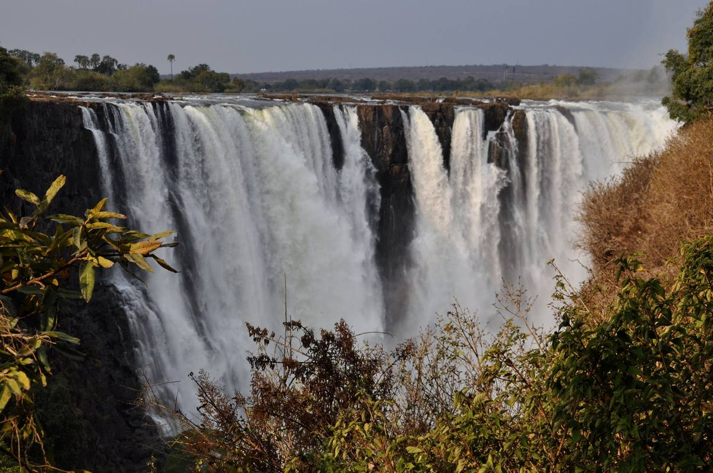

Home / Destinations / Victoria Falls
Victoria Falls
Experience the Zambezi at Mosi-oa-Tunya — the Smoke that Thunders.
Mosi-oa-Tunya — the Smoke that Thunders
The Zambezi River drops into a series of deep basalt gorges at Victoria Falls, creating the spray and mist that make the landscape so distinctive.
Mosi-oa-Tunya / Victoria Falls is a transboundary UNESCO World Heritage property shared by Zimbabwe and Zambia. The surrounding region offers a range of ways to experience the river, gorge and nearby landscapes.
Malachite's published Trans-Trio Borders itinerary combines a guided visit to Victoria Falls with proposed day excursions to Chobe in Botswana and Livingstone in Zambia. Cross-border routes, documentation requirements, transport, inclusions and availability must be checked for each traveller and date.
- The FallsDiscuss a guided visit and how much time to allow for the experience.
- Chobe, BotswanaAsk whether a day excursion can be included in your itinerary.
- Livingstone, ZambiaExplore a cross-border extension, subject to current arrangements and entry requirements.
- Combine destinationsAsk about linking Victoria Falls with Lake Kariba or other confirmed stops.

Plan a Victoria Falls and regional journey
Tell Malachite whether you are visiting the Falls alone or would like to connect the experience with other destinations.
International border crossings can involve separate entry conditions and documentation. Confirm current requirements with the relevant authorities before travel.
Start planning your journey
Tell us where you would like to go, when you hope to travel and who is coming with you. Malachite will review your request and respond with a proposal.
An inquiry is not a reservation. Routes, suppliers, availability, inclusions and final pricing are confirmed directly with Malachite.